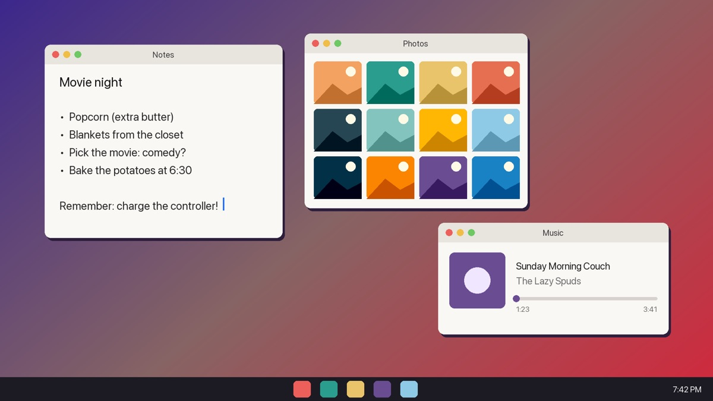

Your computer, from the couch.
SofaSpud shows your Mac or Windows PC on your iPhone. Tap, type, scroll, hear its sound, and play PC games with a controller. Everything is encrypted and goes straight from your computer to your phone.

1. Put SofaSpud on your computer (free)
macOS 15 or later
Download for Mac
Open the download, drag SofaSpud Host to Applications, and open it. macOS asks you to allow Screen Recording and Accessibility — SofaSpud shows you where.
Windows 10 or 11, 64-bit
Download for Windows
Run SofaSpud-Setup.exe. If Windows says "Windows protected your PC", click More info then Run anyway.
2. Get the iPhone app
SofaSpud for iPhone is in beta testing and coming to the App Store soon. Its built-in demo lets you try it before installing anything on a computer.
3. Pair them
- On the computer, SofaSpud shows a pairing code (later, find it from the SofaSpud icon in the Mac's menu bar or by the PC's clock → Pair a phone or computer).
- On the iPhone, tap Add a computer, then scan the code — or pick your computer under Nearby and type it.
- That's it. Next time, just tap your computer.
From another computer
Any computer with SofaSpud can open your other Macs and PCs too. On a Mac, click SofaSpud's icon in the menu bar; on a PC, click the SofaSpud icon by the clock. Choose Connect to a computer…, pick the computer and type the code it shows. You get its screen in a window, in full resolution, with its sound. Pinch (or hold Ctrl and scroll, on a PC) to zoom in; move the pointer to an edge and the picture follows it. Shortcuts are translated between Mac and PC, so your own habits work on the other one: on a Mac looking at a PC, ⌘C is Ctrl+C, ⌘← is Home and ⌥← jumps a word; on a PC looking at a Mac, Ctrl+C is ⌘C, Home is ⌘← and the Windows key opens Spotlight.